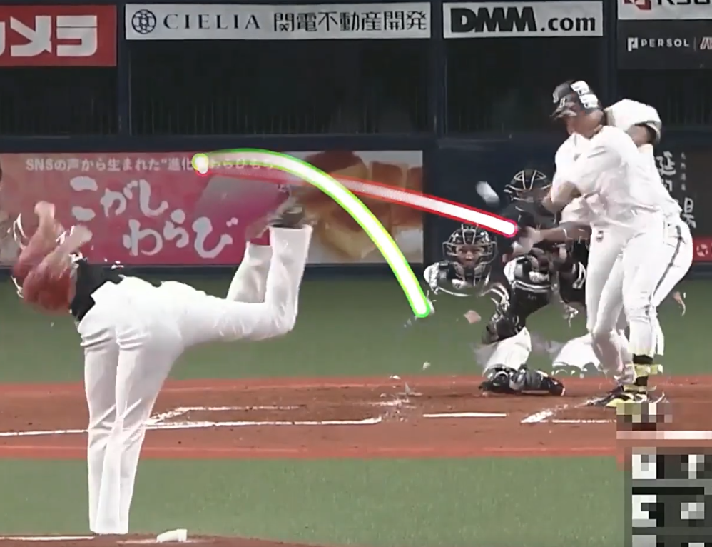

Evaluating Pitchers Using Advanced Stats
DATASCI 209, Winter 2024 - Maryam Feizabad, Jonah Grossman, Jun Park, Chris Erickson
Introduction to Release Point Consistency in Pitching Mechanics
In baseball, a pitcher’s release point—the exact point in three-dimensional space where the baseball is released during each pitch—is a key element in assessing their consistency and effectiveness on the mound. Scouts and talent evaluators view a pitcher’s consistency in release point as a critical indicator of their mechanics, which, when stable, lead to better accuracy and control. Even minor variations in release points can significantly impact a pitcher’s performance, affecting pitch accuracy and potentially giving batters clues about pitch type or trajectory.
Why Release Point Consistency Matters
Pitchers who can maintain a consistent release point across different pitch types and throughout a game tend to be more challenging for batters to read. Consistency in release points prevents a batter from predicting the type of pitch being thrown based on subtle mechanical changes, thereby enhancing the pitcher’s unpredictability. For scouts, consistent mechanics are valuable, as repeatable release points correlate with better control, fewer walks, and more effective game management.


Measuring Release Point Consistency
Thanks to MLB’s Statcast system, release points can be tracked precisely with an X, Y, Z coordinate for every pitch thrown. Leveraging this tracking capability, we have developed a metric that captures the volatility—or lack thereof—in a pitcher’s release point, providing insights into their mechanical consistency.
Our Process for Calculating Release Point Consistency
The calculation involves several key steps:
- Distance Between Successive Pitches: After each pitch, we measure the distance between the three-dimensional coordinates of the release points of the current and previous pitches. This distance helps quantify the variation in release points from one pitch to the next.
- Rolling Window Standard Deviation: To smooth out fluctuations, we use a rolling window of the last 10 pitches to calculate the standard deviation of these distance measurements. This rolling window volatility is the primary measure of release point consistency, providing insights into whether the pitcher’s mechanics have become more or less stable within short intervals.
- Per-Game Aggregation: For easier comparison and visualization, these rolling volatility measures are aggregated per game and displayed on our scouting dashboard.
# Lookback period in pitches.
window_size = 10
# Compute 3-dimensional release point difference from previous pitch.
df['x_diff'] = df.groupby(['game_key','pitcher','pitch_type'])['release_pos_x'].diff()
df['y_diff'] = df.groupby(['game_key','pitcher','pitch_type'])['release_pos_y'].diff()
df['z_diff'] = df.groupby(['game_key','pitcher','pitch_type'])['release_pos_z'].diff()
# Compute euclidean distance in release point from pitch-to-pitch.
df['release_distance'] = np.sqrt(df['x_diff']**2 + df['y_diff']**2 + df['z_diff']**2)
# Calculate a rolling-window measure of standard deviation (units = feet).
df['rolling_volatility'] = df.groupby(['game_key','pitcher','pitch_type'])['release_distance']\
.rolling(window=window_size).std().reset_index(level=['game_key', 'pitcher', 'pitch_type'], drop=True)
# Generate table showing min/max/avg volatility and strike_percentage for each pitcher (by game and pitch_type).
df_vol = df.groupby(['game_key','pitcher','pitch_type']).agg({'player_name':'last','rolling_volatility':['min','max','mean'],'ball':['sum','count']}).reset_index()
Interpreting Release Point Consistency
A lower volatility score indicates a higher level of consistency in the pitcher’s release point, reflecting more stable mechanics and control. Conversely, a higher volatility score suggests fluctuations in release points, which may hint at issues with mechanics or fatigue. Aggregating these values per game allows scouts to quickly see which pitchers demonstrate consistent mechanics over longer periods and identify trends over a season.
In our analysis, the league median Avg Release Point Volatility per Game was 1.59 inches (Starting Pitchers only, 2023 Statcast data). This benchmark provides a comparative baseline: pitchers with a volatility score below 1.59 inches exhibit above-average control and consistency. In contrast, scores above 1.59 inches suggest more variation in release points, potentially signaling mechanical inconsistency or issues with control.
The chart below shows the per-game Release Point Volatility data for George Kirby who, in 2023, showed above-average consistency in 27 of 31 starts (87.1%).

Implications for Scouts and Talent Evaluators
For scouts, these distinctions are significant. A pitcher whose volatility consistently falls below the league median is likely to have repeatable mechanics, which enhances their ability to execute precise pitches and avoid predictable patterns. By visualizing these values across multiple games, our dashboard enables scouts to assess whether a pitcher maintains mechanical stability over time, thus informing recruitment, training, and game strategy decisions.